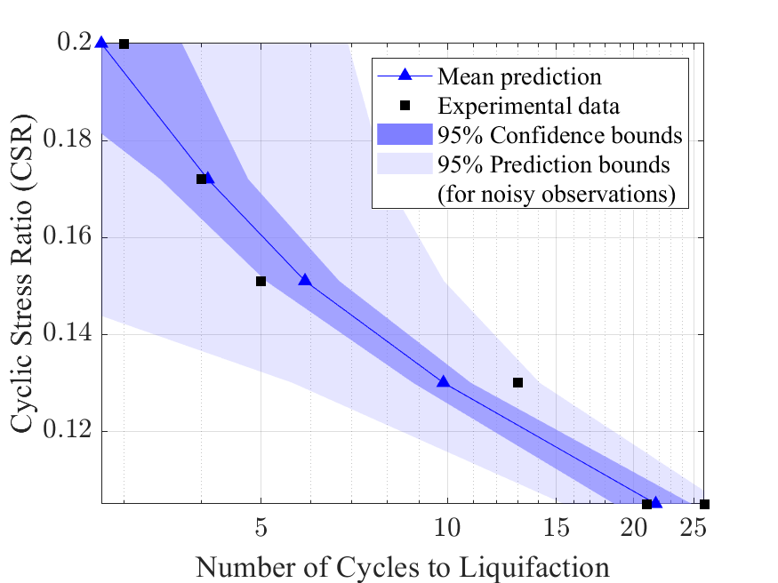
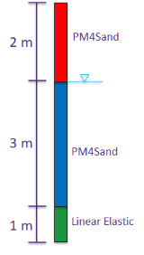
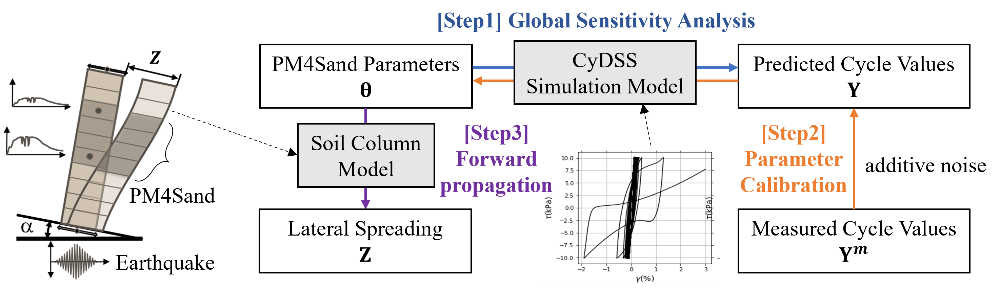
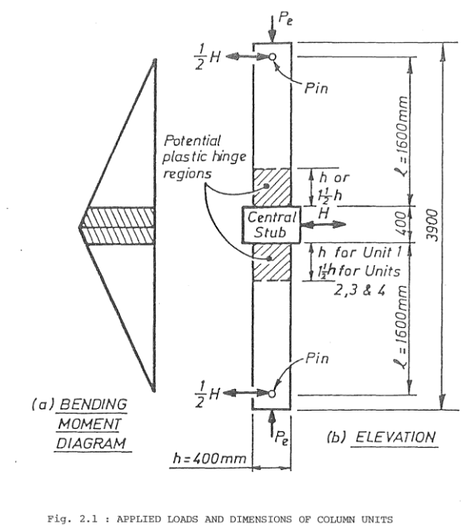

5. Examples
The examples in this section can be accessed from the application by selecting Examples in the Main Menu. They demonstrate the range of workflows that can be executed with the application and serve as ready-to-use prototypes that may be modified to create custom workflows. Each example is designed to run quickly, with the primary goal of demonstrating how workflows can be assembled. To achieve this, certain settings—such as the number of samples, the finite element model, and the number of assets—have been intentionally kept small and simplified.
The files for the examples are available in the quoFEM GitHub repository.
This example illustrates how quoFEM interacts with the Tcl interpreter for OpenSees. A simple forward propagation procedure is run to estimate the first and second central moments of a FE model's response, given the marginal distributions of various random parameters.

This example illustrates how quoFEM interacts with OpenSeesPy. A simple forward propagation procedure is run to estimate the first and second central moments of a FE model's response, given the marginal distributions of various random parameters.

This example illustrates how Python scripting can be used with quoFEM to express general mathematical models without the use of a dedicated finite element analysis engine.

In this example, a parameter estimation routine is used to estimate column stiffnesses of a simple steel frame, given data about its mode shapes and mass distribution.

A global sensitivity analysis is conducted with correlated random variables using the SimCenterUQ engine for sensitivity analysis.

In this example, Bayesian estimation is used to estimate the lateral story stiffnesses of the two stories of a simple steel frame, given data about its mode shapes and frequencies. The transitional Markov chain Monte Carlo algorithm is used to obtain samples from the posterior probability distribution of the lateral story stiffnesses

This example constructs a Gaussian process-based surrogate model for the response of a building structure given a ground motion time history. We are interested in the maximum inter-story drift/acceleration response determined in 14 structural parameters.

This example constructs a Gaussian process-based surrogate model for the mean and variance of building responses subjected to ten different ground motions. A floor response of a six-story shear building model is investigated.


In this example, the parameters of the STEEL02 material model in OpenSees are calibrated by Bayesian inference. Experimental data is passed in to quoFEM from an external file, and the output is the time-history of stress - a non-scalar response quantity.

Consider the problem simulating response of a two-dimensional truss structure with uncertain material properties. The goal of the exercise is to demonstrate the use of ``PLoM model`` method under ``SimCenterUQ`` to predict the response of the truss under the given load.
In this example, the parameters of the STEEL02 material model in OpenSees are calibrated by Bayesian inference. Experimental data is passed in to quoFEM from an external file, and the output is the time-history of stress - a non-scalar response quantity.

In this example, demonstrates the heteroscedastic Gaussian process model

Two models of a 6-story structure are used to predict the maximum base shear experienced during a nonlinear time history analysis of the structure subjected to seismic excitation

A hierarchical model is used to model the uncertainty in the parameters of a material model and data from multiple experiments is used to calibrate the hierarchical model

PM4Sand example series (2): Bayesian Calibration is performed to obtain the plausible parameters values of PM4Sand model that matches experimental observations.

PM4Sand example series (3): Forward propagation is performed for soil column model for simulating lateral spreading response of a site subjected to an earthquake. For this, the PM4Sand parameter samples obtained in Bayesian calibration is directly utilized.

PM4Sand example series (1): Sensitivity analysis is performed to identify the important parameters in a liquefaction-capable soil constitutive model, PM4Sand model.

This example demonstrates surrogate-aided Bayesian calibration of a reinforced concrete column model in OpenSeesPy. A Gaussian process surrogate model approximating the finite element model's response is iteratively refined using adaptive design of experiments to improve the accuracy of the posterior approximation. The trained surrogate model is used to accelerate the calibration of three key parameters (crack factor, yield moment, and capping moment) using experimental force-displacement data from cyclic loading tests.
